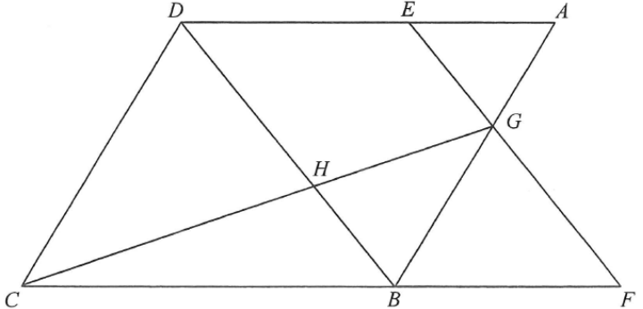

幾何 · 平行四邊形與相似三角形

設 $AE=2k$、$ED=5k$，則 $AD=7k$；又 $BF=DE=5k$。
平行四邊形對邊相等：$AB=CD$、$AD=BC=7k$。
$AE\parallel BF$（$AD\parallel BC$），故 $\triangle AEG\sim\triangle BFG$：
$$\frac{AG}{BG}=\frac{AE}{BF}=\frac{2k}{5k}=\frac{2}{5}\quad\Rightarrow\quad AG:GB=2:5$$
所以 $AB:GB=(2+5):5=7:5$。
$$\frac{DH}{BH}=\frac{CD}{GB}=\frac{AB}{GB}=\frac{7}{5}\quad\Rightarrow\quad DH=\frac{7}{12}BD$$
① $\triangle ADG$ 與 $\triangle AEG$ 同高（底在 $AD$）：$[ADG]=48\times\dfrac{7}{2}=168$。
② $\triangle ABD$ 與 $\triangle ADG$ 同高（底在 $AB$）：$[ABD]=168\times\dfrac{7}{2}=588$。
③ 對角線平分平行四邊形：$[CBD]=[ABD]=588$。
④ $\triangle CDH$ 與 $\triangle CBD$ 同高（底在 $BD$）：$[CDH]=588\times\dfrac{7}{12}=343$。
故 $\triangle CDH$ 的面積為 $343\ \text{cm}^{2}$，答案 B。